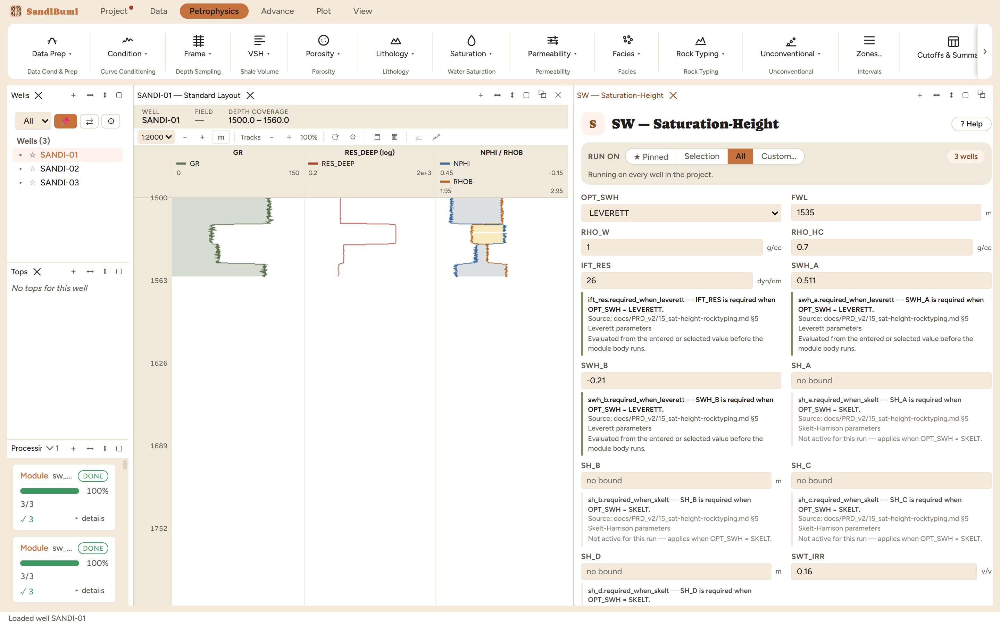
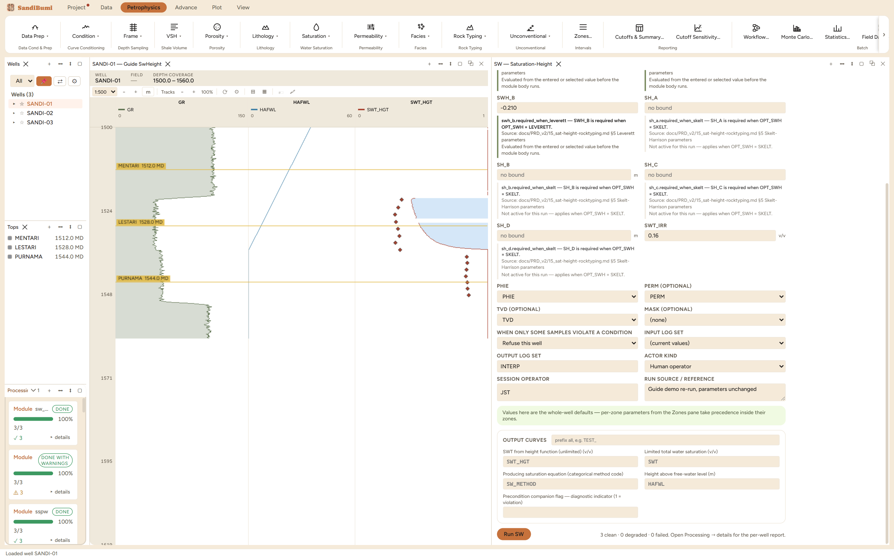

Saturation from height above the free-water level: the capillary-pressure route to Sw, fitted to core data and driven by nothing but depth, porosity and permeability. It is the one saturation in this book that never reads a resistivity log, which is exactly its value: run beside the resistivity methods it is an independent witness, and in volumetrics it is the model that extends Sw away from the wells, because a geomodel has structure and rock properties everywhere but resistivity only along wellbores.
Height above the contact sets capillary pressure through the density contrast, Pc = 0.433·(RHO_W − RHO_HC)·h with h in feet; the Leverett transform makes it dimensionless against the rock's own pore geometry:
J = 0.21645 · Pc / IFT_RES · sqrt(PERM / PHIE) SWH = SWH_A · J^SWH_B (below the FWL, h ≤ 0: SWH = 1)
SWH_A and SWH_B come from fitting J against core capillary-pressure measurements (the SCAL import performs and reports that fit); the result is limited to [SWT_IRR, 1]. Height is measured on the TVD curve when one exists and on measured depth otherwise, and the FWL must be entered on the same reference. A Skelt-Harrison alternative is available where a J function fits the core poorly.

3 clean. The HAFWL output spans −25.1 to +19.9 m: the contact sits mid-section, so half of every well is below it and reads SWH = 1 by definition, which is why the whole-section median is exactly 1 and means nothing about pay. Above the contact the median is 0.4703 over 248 samples:
SELECT round(median(a.value), 4) FROM computed_curves a JOIN computed_curves h ON a.well_id = h.well_id AND a.depth = h.depth AND h.curve_name = 'HAFWL' AND h.value > 0 WHERE a.curve_name = 'SWT_HGT' AND NOT isnan(a.value)
That 0.47 median against the resistivity methods' 0.09 to 0.16 in the same gas sand is not a bug in either: with barely 20 m of column above the contact, this Pc model keeps the whole gas leg in transition, while resistivity sees it far drier. An R² of 0.586 on 24 plugs rides into every one of these numbers, and reconciling the two families against production evidence is precisely the calibration conversation this module exists to start.
The FWL dial, measured: the contact moved 25 m deeper (1560) puts the whole section above it, and the median jumps from 1 to 0.4257. The transition zone travels bodily with the contact, so no parameter in this module deserves more scrutiny than the FWL, and it is zone-overridable for stacked reservoirs with different contacts. Restored to 1535, every number returns exactly.
